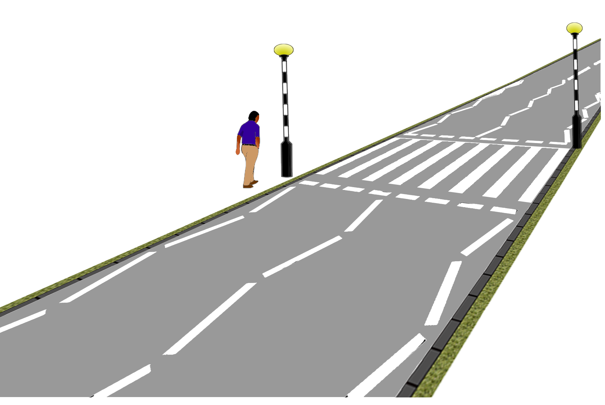

You must give way to pedestrians on or waiting to cross a zebra crossing.
At the crossing below, a man is walking casually. There is no clue if he will use the crossing or pass it. If you are likely to arrive at the same time, check your mirrors and carefully reduce your speed so that you could stop if need be.
When stopping, do so just behind the give way line and secure the car, either firmly with the footbrake or with the handbrake. If you were bumped from behind, you wouldn’t want to be pushed into the pedestrians.
Wait patiently, especially for the elderly or disabled who may take longer to cross.
Don’t beckon people across, let them judge for themselves if it is safe to step out.
Wait until the pedestrians have stepped back onto the pavement before proceeding.
Where there is a central refuge in the middle of the crossing, treat it as two separate crossings. This means that once they have stepped onto the refuge, you can proceed carefully, but be prepared to stop for people approaching the refuge from the other side.
Check over your shoulders before setting off in case of people running up to the crossing at the last minute.
The zigzag lines either side of the crossing have two meanings:
-Don’t overtake on them
-Don’t park on them
